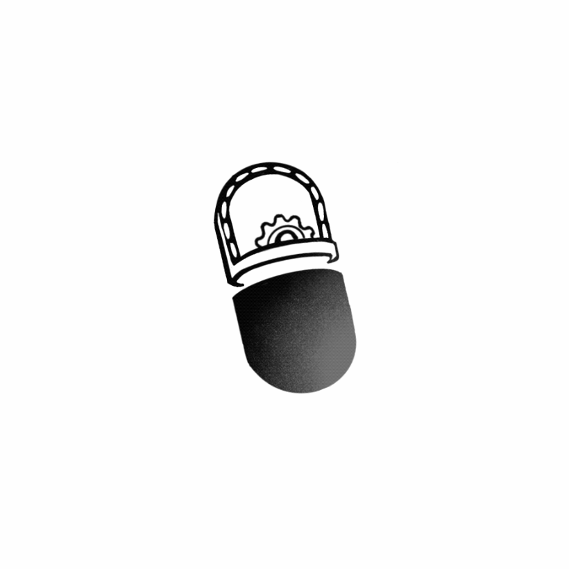

With the rapid development of e-commerce, China has witnessed a sharp increase in the delivery volume of packages. To avoid the damage of goods during transportation, applying a certain degree of packagings is of great necessity. However, these packagings always end up as garbage for consumers.
In 2020, there are 83.36 billion pieces of parcels in China, leading to more than 9 million tons of wasted paper and 1.8 million tons of wasted plastic. It is anticipated that material consumption caused by express packagings will reach 41.2705 million tons by 2050, which imposes enormous strains on the environment.
(补一张数据图)
Among these wasted packaging materials, most of the plastic is hard to be degraded.
The lack of proper disposal methods, together with the high cost and low profit in recent recycling conditions, all account for the actuality that about 99% of plastic waste is eventually sent to incineration plants or refuse landfill, where its disposal is the same way as household waste. In this situation, resources are massively lost while the environment is severely polluted.
It is worth noting that authorities concerned have launched some policies to impose restrictions on the production, circulation, consumption and recycle of plastic materials in recent years. This action attaches extraordinary importance to plastic disposal.
Considering factors all above, we felt an obligation to do something to improve the present situation. By researching and interviewing, we got to know that the disposal of polyethylene (PE), the very material widely used in plastic packages, is a thorny issue, due to the vacuum of ideal treatment strategy. Therefore, our team planned to focus on inventing novel methods to degrade PE.
（可以补一张HP采访图）
However, because of its high molecular weight, strong hydrophobicity and low interface energy, the biodegradation process of PE requires hundreds of years for it to completely break down into water and carbon dioxide without any human engagement.
Thanks to some inspiring reports, we learnt that there are certain kinds of fungus own the ability to decompose compounds similar to PE. An idea of creating a PE-degrading enzyme complex flew into our minds. Taking biosafety into our consideration, we focused on synthetic biology-based measures and decided to construct a cell-free system to degrade PE in a more effective way.
Facing the imperious demand for an efficient way to dispose PE, we came up with the design of this system. We chose manganese peroxidase (MnP) to oxidize and degrade PE with the assistance of aryl alcohol oxidase (AAO). Then, we added hydrophobin-1 (HFB1), a type of amphipathic protein, to make it easier for the peroxidase to get closer to substrate and therefore improve its efficiency. These parts were eventually united by CRISPR/dCas9 system and SpyCatcher/SpyTag system into a programmable assembly, whose spatial distance and proportion can be controlled. It is hoped that our project can serve as an efficient disposal method of PE. Taking care of our shared environment by this tiny but delicate system, we are devoting ourselves to make the world a better one.
(补一张总图？)